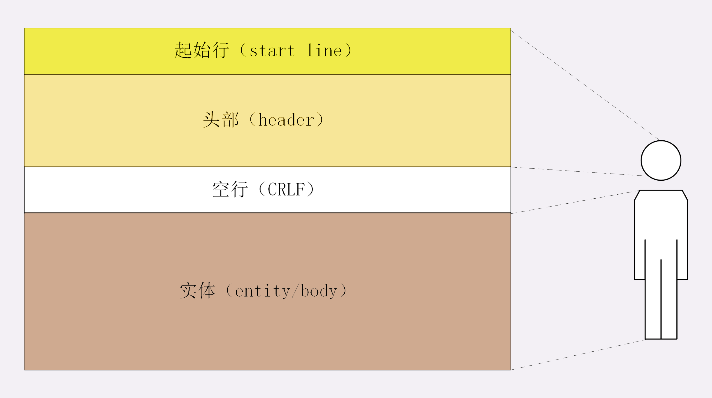
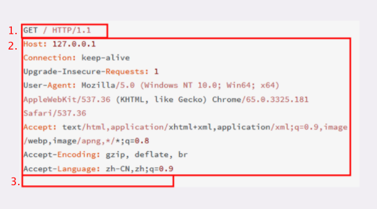
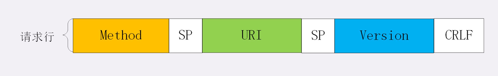
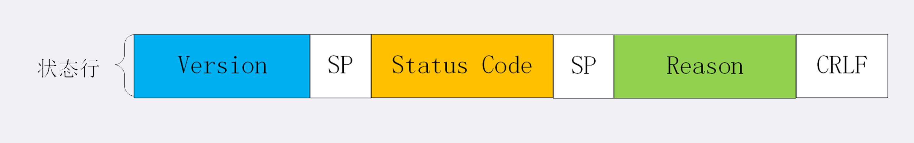

身为一个前端，HTTP 对我而言就像是云雾环绕的一座山，看不透也不知从哪开始攀登。深入学习 HTTP 协议系列就是我对罗剑锋老师的《透视HTTP协议》所做的总结。希望能对大家的登山之旅有所帮助。
当我们在浏览器地址栏输入网址再按下回车发生了什么？
- 浏览器发起域名解析获取地址对应的 IP；
- 浏览器用 TCP 的三次握手与服务器建立连接；
- 浏览器向服务器发送拼好的报文；
- 服务器收到报文后处理请求，同样拼好报文再发给浏览器；
- 浏览器解析报文，渲染输出页面。
域名解析的过程中有多级缓存，浏览器先查看自身缓存，没有再向操作系统缓存要，还没有就检查本机域名解析文件 hosts，最后则会用 DNS 域名解析系统进行。在这个过程中可能会经历 CDN 解析，拿到 CDN 服务器的地址
在达到目标服务器后，通常会经历负载均衡设备，负载均衡设备会访问系统里的缓存服务器，通常有 memory 级缓存 Redis 和 disk 级缓存 Varnish。
如果缓存服务器里没有所要数据，就会把请求转发给应用服务器，例如 Java 的 Tomcat/Netty/Jetty，Python 的 Django，还有 PHP、Node.js、Golang 等等。然应用服务器处理完成后把执行的结果返回给负载均衡设备。
到达负载均衡后请求的处理就完成了，会按照请求顺序原路返回。
HTTP 协议的核心部分 - HTTP报文
报文结构
HTTP 协议的请求报文和响应报文的结构由三大部分组成
- 起始行（start line）：描述请求或相应的基本信息；
- 头部字段集合（header）：key-value 的形式；
- 消息正文（entity）：实际传输数据。
其中前两部分经常被称为 请求头/响应头，正文部分称为body。
HTTP 协议规定报文必须有 header，可以没有 body，在 header 和 body 之间必须有一个空行，如下图所示。

抓包分析

图中1，第一行为请求行部分。2，为 header 部分，3 是空白行部分。这里没有发送 body，所以没有 body 信息。
请求行
报文的起始行就是请求行，它简要的描述了客户端想要如何操作服务器端的资源。
1 | GET / HTTP/1.1 |
在抓包获取的信息中，我们可以看到请求头由三部分组成：
- 请求方法，表示对资源的操作，对应上面代码中的 GET，；
- 请求目标，通常是一个 url，表记录请求方法要操作的资源，对应
/； - 版本号：表示报文使用的 HTTP 协议版本，对应
HTTP/1.1。
这三个部分通常用空格来分隔，最后用 CRLF 换行表示结束，用图片来描述就是下面这个方式。

状态行
服务器响应报文里的起始行叫做状态行，表示服务器响应的状态。
1 |
|
也由三部分组成：
- 版本号，表示报文使用的HTTP 协议版本号；
- 状态码，表示处理结果，如 200 成功，500 服务器错误；
- 原因：作为数字状态码的补充，在上面代码是
OK。
它的组成规则和请求行一致，用空格来分隔，用 CRLF 换行表示结束，如下图所示。

头部字段（header）
请求行/状态行加上头部字段（header），就组成了请求头/响应头。
如下图所示：

头部字段是 key-value 的形式，之间用 ： 分隔，最后用 CRLF 换行表示结束。
注意：
- 字段不区分大小写，不允许出现下划线
_，可以使用短横线-连接。 - key 后面紧跟
:，不能有空格。但是:和 value 之间可以出现空格。 - 字段的顺序是无意义的。
- 字段原则上不能出现重复，除非字段本身语义允许，如 Set-Cookie。
- 在请求头/响应头中只有
Host字段是必须的。
-%E4%B8%8Ehttp%E7%9B%B8%E5%85%B3%E6%A6%82%E5%BF%B5/index.png)